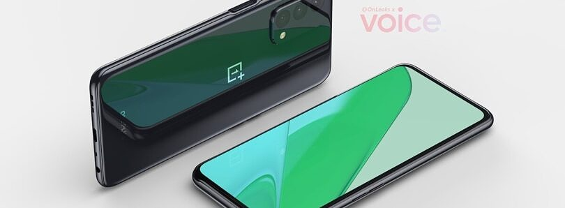

OnePlus released its first ‘Nord’ phone last year as the company began to expand to cheaper smartphones. The original Nord has already been followed up by two additional models, the Nord N10 5G and Nord N100, and OnePlus confirmed last month that two more phones were on the way. OnePlus CEO Pete Lau has now shared new details about its latest budget phone, the OnePlus Nord N200, as well as the first official image.
The OnePlus Nord N200 will replace the Nord N100, which is currently the company’s cheapest phone at $180. Pete Lau confirmed (via PCMag) that the OnePlus Nord N200 will be priced under $250, and unlike the Nord N100, it will support 5G in the United States. OnePlus could be positioning it as a competitor against the Galaxy A32 5G, Samsung’s cheapest 5G phone with a similar price of $280. Lau also revealed that the Nord N200 will have a 6.5-inch 1080p LCD screen, an improvement over the Nord N100’s 720p panel.